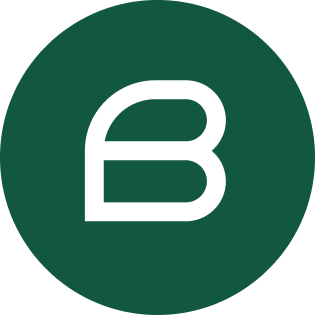

Berrydocs - Knowledge Hub 
The repository at hand hosts the Knowledge Hub. The website is deployed from the /docs folder of the main branch of the repository, so any changes not reflected in the /docs folder of the main branch will not be reflected on the live website.
The website is built using Quarto, which means the /docs folder is populated automatically using the features of Quarto and should not be edited manually. In order to work on the website, you will need to have Git, Quarto and pandoc installed. It is highly recommended that you open the repository as a project in RStudio or Positron. If you choose not to do so, you might not be able to preview the website locally or only with python3 downloaded and installed and Jupiter notebooks installed via running py -m pip install jupyter.
This document is a guide how to modify the contents and build the website using Quarto and finally how to deploy the site using Github pages.
Modify Content
git clonethe repository.- This can be done using the Git manager inbuilt in R Studio or Positron, or using any other Git manager. The command is
git clone https://github.com/BerryConsultants/berrydocs- Modify existing pages.
-
To modify an existing page, you need to modify the corresponding Quarto file. The folder structure in the repository generally (but not exclusively) follows the folder structure in the
/docsfolder (i.e. on the website).
As an example, imagine you want to edit the list of videos and webinars. The corresponding website is
https://docs.berryconsultants.com/introduction/webinars.html. The corresponding Quarto file you need to modify is/introduction/webinars.qmd. For a guide on the Quarto Markdown syntax, please refer to the Quarto website.- Add new pages.
-
Whenever you want to add new pages, the workflow differs slightly depending on the contents of
/_quarto.yml. This file governs the navigation bar and sidebar structure on the website. If for a new page you want to create (i.e. for a new.qmdfile you create), the/_quarto.ymlfile does not yet have instructions where to add this page on the website, the page will be available only using a hard coded link upon building, not through any of the navigation bars.
Oftentimes, all the contents of a given folder will be displayed automatically in alphabetic order (by Quarto filename), such as in
introduction/tutorials/phase1/(this is achieved with a relevant line ofauto: introduction/tutorials/phase1/*.qmdin the.ymlfile). In this case, feel free to duplicate any of the.qmdfiles in this folder and change its contents, the rest is done automatically.In case you are creating a new folder, or are adding files in a folder for which the contents are not displayed automatically in alphabetical order, you need to make sure that the new files are picked up by
/_quarto.yml(i.e. they are actually displayed somewhere on the website). Please follow the existing structure of creating navigation bar and sidebar entries to make the new page visible.
Build Site
Using RStudio’s terminal, navigate to the location to where you cloned the berrydocs repository. You can now build the website by running
quarto renderwhich re-generates the /docs folder from the .qmd files following a set of rules specified in the .yml and .css files. If any errors occur, you might have to install the appropriate version of Rtools based on your R version and ensure that you have the following packages installed via install.packages([name of package], dependencies = TRUE) using RStudio: devtools, rmarkdown, knitr, pkgdepends, pkgconfig, shinylive.
If you want to preview the website, you may run
quarto previewDeploy Site
When you are done making changes and building the new website locally, please git push your changes to the main branch.
The website is deployed using Github pages. The settings in the Github repository automatically deploy the contents of the /docs folder of the main branch to docs.berryconsultants.com. Any changes to the contents of the /docs folder on the main branch will be picked up immediately by Github once changes have been git pushed, the website will be rebuilt and the changes should be visible within a few minutes. Please note that depending on the nature of the changes, they might take a little longer to be picked up (at most 24h).
By default, the website deploys to BerryConsultants.github.io/berrydocs. Having a CNAME in place means an alias is created for docs.berryconsultants.com.
Update FACTS version (major or second digit)
A python script updateVersion.py exists in the root folder for this purpose. For all further steps, make sure you have terminal open in the root folder of berrydocs. In order run the script, ruamel.yaml needs to be installed. If you haven’t already, install it using
pip install ruamel.yamlor possibly
python3 -m ensurepip --upgrade
python3 -m pip install --user ruamel.yamlIf neither of these work, make sure you have Python installed and can run Python command line code.
In order to upgrade from one FACTS version to the next (only affects major or second digit upgrades), run
python bump_version.py v72 v73or possibly
python3 bump_version.py v72 v73where v72 and v73 correspond to the most recent and the new FACTS version number respectively.
This command will duplicate the sidebar entries for the “Documentation” section of the most recent version and change all the links to point to the .qmd files of the new version. It also updates the links in /documention/index.qmd to point to the most recent user guides.
Please note that if between two versions not only the contents of the user guides were changed, but new user guides were added (as in new .qmd files were added), they will still need to manually linked in the _quarto.yml file after the above code has been run.